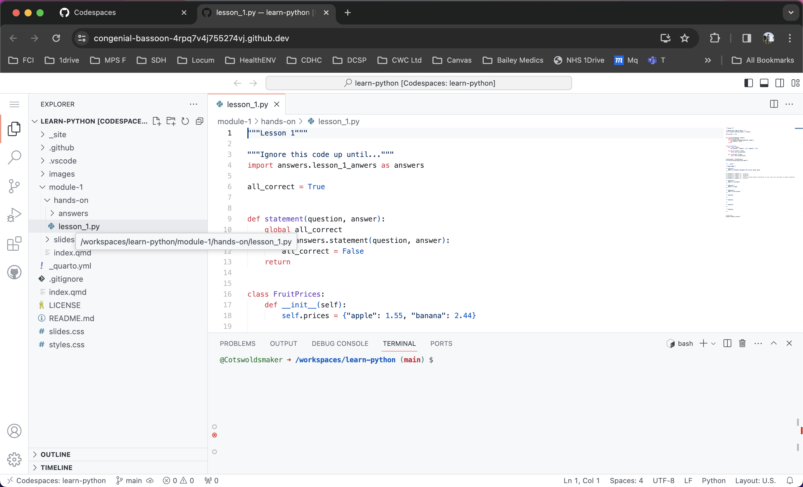
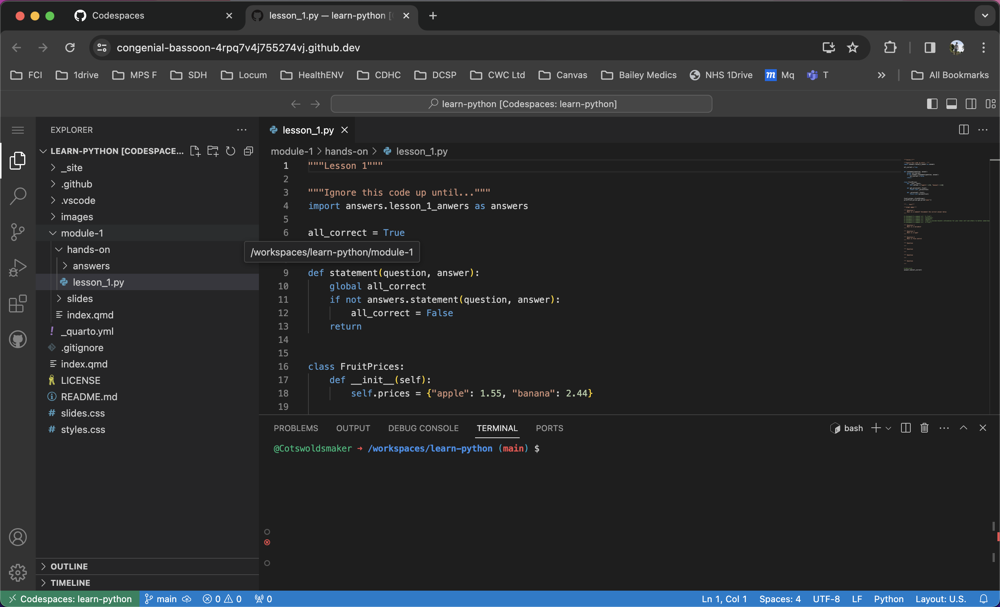
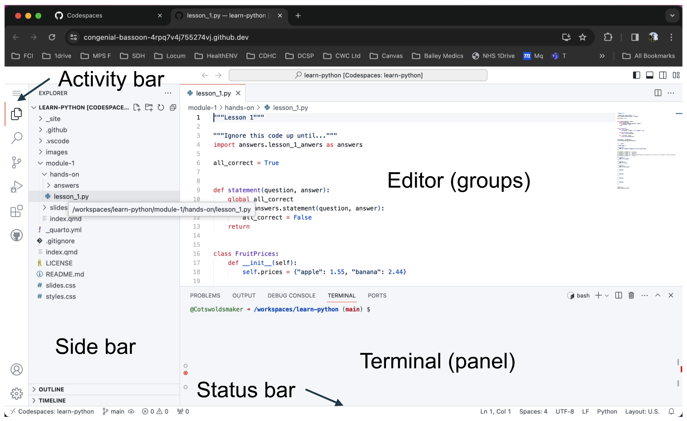
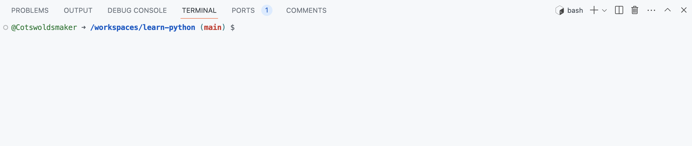
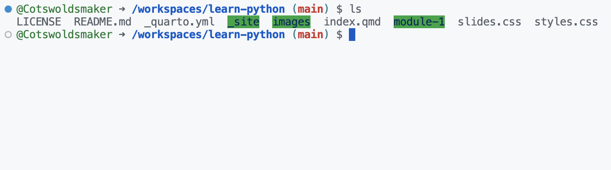
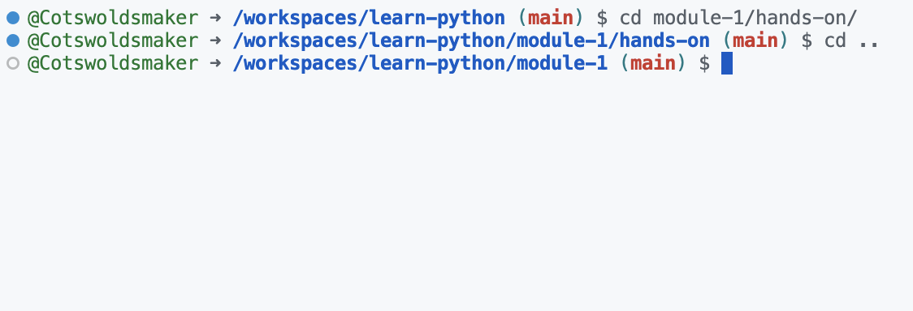
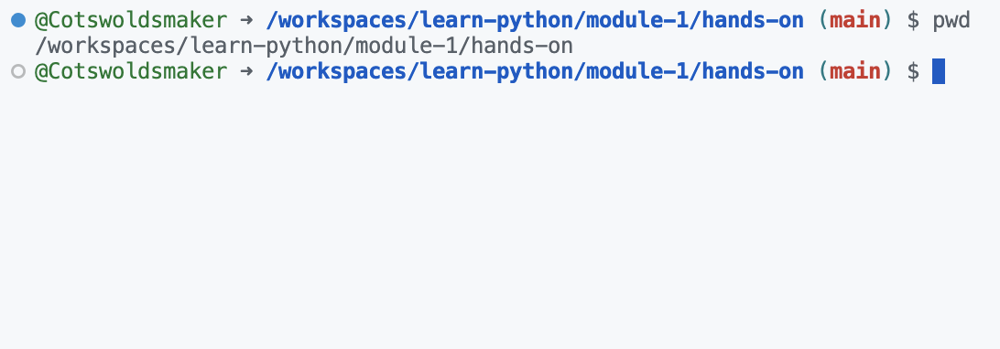

Coding environment (and the shell)
Module 1
The coding environment
Today’s hands-on sessions
- We will be using the GitHub
Codespacedevelopment environment. - This is a browser version of the well known desktop
VS Codedevelopment environment. - In the context of this course, a development environment is synonymous with the
teaching environment.



Useful terminal (shell) commands

Commands
- A command is a piece of code that carries out a
specific task. - These tasks can be as simple as showing you what folder you are in, to printing, changing settings, and updating the operating system.
Using the terminal
- Also called the
command line interface(CLI) or theshell.
Steps:
Select the terminal(aka click on it).Type in your command(this needs to be typed out exactly).Press enterto run the command.
Pro tip:
- If you want to run a previously run command, you can select it with the ↑ and ↓ arrow keys on the keyboard.
List files and folders command
- The
lscommand.

Change directory command
- The
cdcommand. cd ..takes you back to the previous (parent) folder.

Where am I?
pwdis theprint working directorycommand.

Time to try it out for yourself
Lession 1
- Join your tutor group in the
Zoom break out rooms. Follow the linkto the online learning environment (Codespace).- Change the directory (don’t type the
$. This is just how we show this is the command line):
$ cd users/{your_name}/module-1/hands-on- Replace
{your_name}with your own name in the formatfirstname underscore lastname, egjohn_doe. - Run the following command in the new directory
$ python lession_1.py- Did it work? If so, open up the lession_1.py file.
- Any problems, just ask your tutor for help.
- There is no such thing as a stupid question, only the question left unanswered.
- We will give you 20 minutes for lession 1.